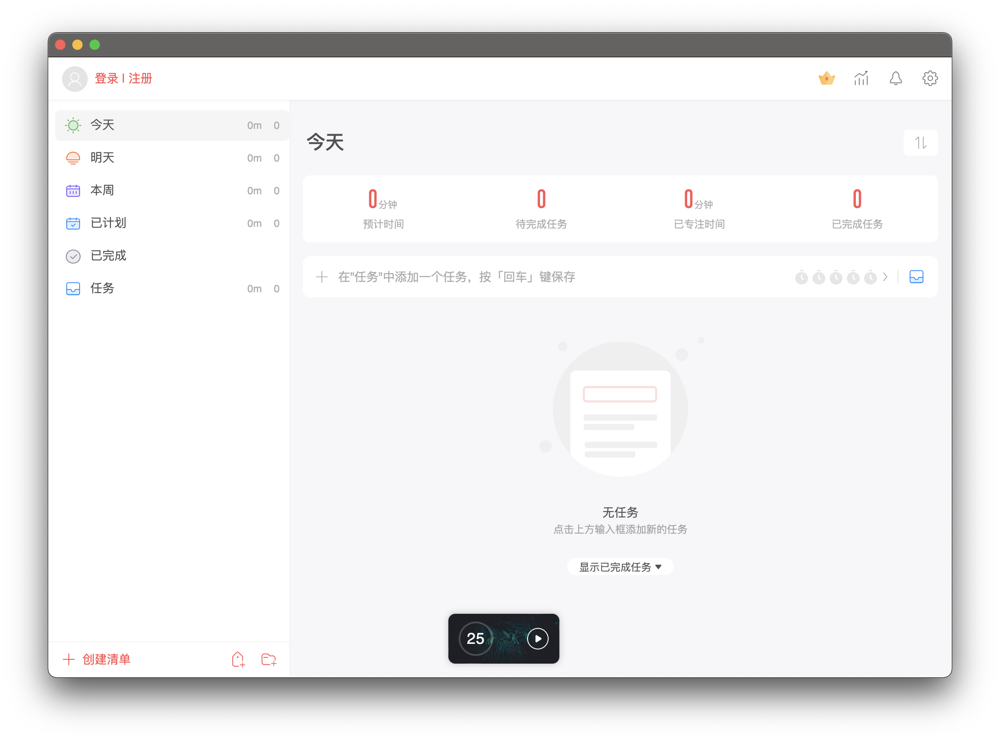
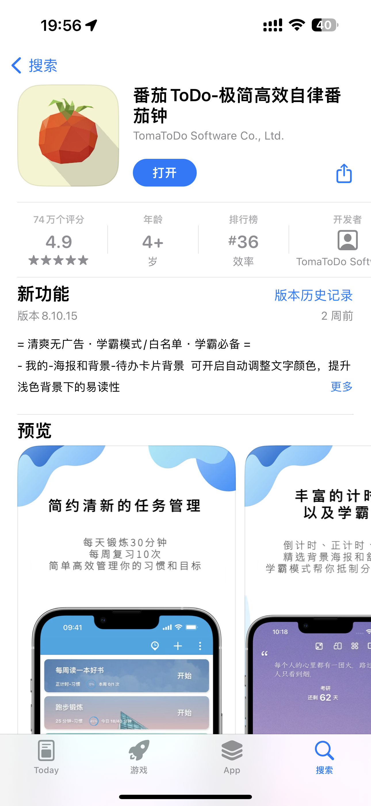
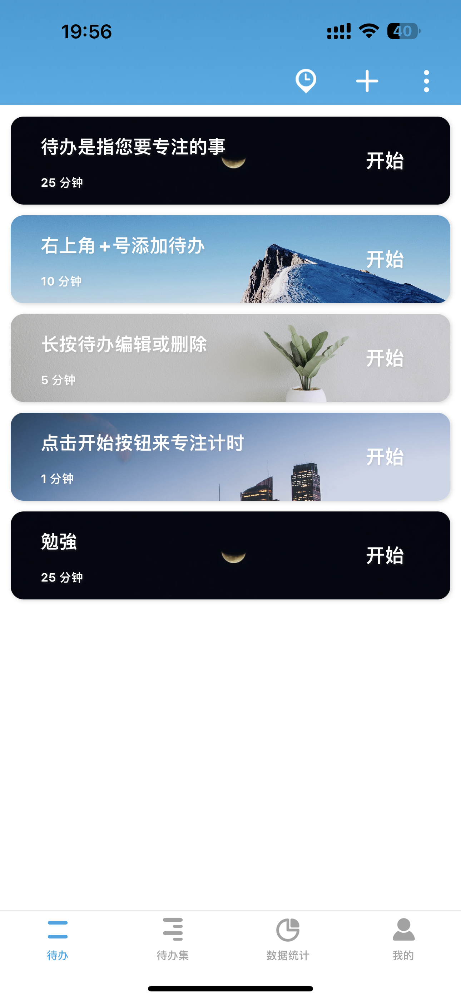
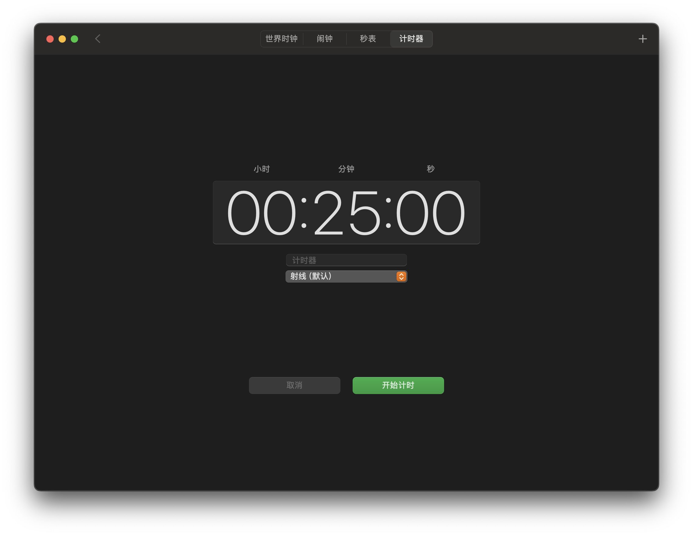

1. 专注清单
“专注清单”是一款Mac应用，通过这款应用你可以创建任务，并且根据每个不同的任务分别开启番茄钟。

2. Be Focused
Be Focused是一款更简洁的Mac番茄钟应用，你可以通过这款应用简单的开启倒计时，同时进行你的任务。


3. 番茄todo
番茄todo是一款手机和平板端的番茄钟应用，通过番茄todo，你可以为不同的任务设计番茄钟，并且在统计信息中可以看到你为每项任务花费的时常。 另外，你还可以加入或创建自习室，与小伙伴共同学习，比赛学习时长。


4. 自带计时器
当然，最简洁的方式当然是使用你的手机/平板/电脑自带的计时器功能，番茄钟只是一种辅助学习的方法，最重要的学习本身！
